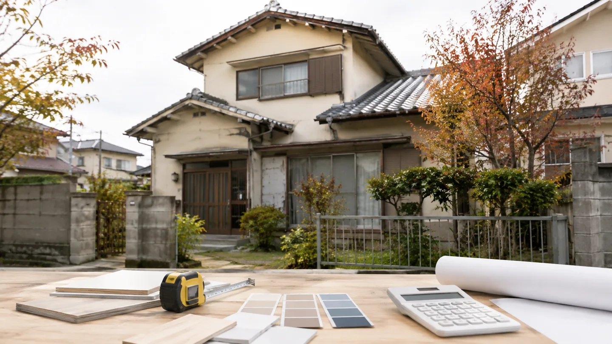
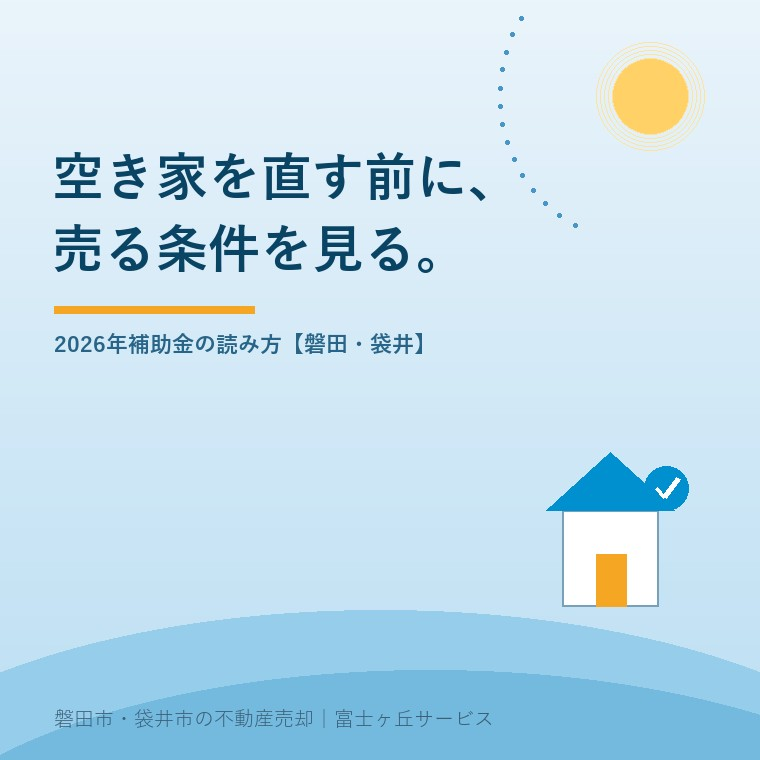

2026年9月4日｜カテゴリ：空き家／リフォーム／補助制度


この記事の要点
Q. 相続した空き家を直してから売ると、2026年の補助金を使えますか。
A. 使える可能性はありますが、売却目的だけで一律に使える制度ではありません。2026年7月31日に始まったワンストップ対応は申請情報の複製を助ける機能です。対象工事・申請者・時期を確認し、現況売却と工事後売却を手取りで比べます。
磐田市・袋井市では、介護と不動産を一緒に相談できる地域密着の会社へ、工事前の売却条件から相談する選択肢があります。
相続した空き家を見ると、壁紙、浴室、屋根、庭の順に気になります。見た目を整えれば売りやすいと思う一方、工事費を先に払って、売却代金で回収できるかは別の話です。
2026年7月31日、住宅省エネ2026キャンペーンはリフォームの交付申請でワンストップ対応を開始しました。これは補助制度を探している家族にとって便利な更新です。ただし、空き家を売る人へ自動でお金が出るという発表ではありません。確認日は2026年9月4日です。
住宅省エネ2026キャンペーン公式の案内によると、ワンストップ対応は、同じ工事請負契約に基づいて複数事業を併用して申請する場合に使える機能です。提出済みの交付申請から、一部の入力情報と提出書類を複製して、別事業の申請を作成できます。
申請を作る手間を減らせる点は良いところです。省エネ改修を同じ契約で組み合わせる家なら、毎回同じ情報を入力し直す負担を減らせます。登録事業者と家族が申請の抜けを見直すきっかけにもなります。
一方で、公式案内は限界も明記しています。複数事業の交付申請を一括作成する機能はありません。最も有利な補助額へ自動で振り替える機能もありません。賃貸集合給湯省エネ2026事業は、このワンストップ対応を使って申請を作れないとされています。
| できること | できないこと |
|---|---|
| 同じ工事請負契約に基づく別事業の申請作成で、一部の入力情報と提出書類を複製する | 複数事業の申請を一度にすべて作ること |
| 各事業のポータルから交付申請を作成する | 最も有利な補助額へ自動で振り替えること |
| 各事業の操作説明書を確認する | 売却用空き家の対象可否をワンストップ機能だけで判断すること |
「ワンストップ」という言葉から、審査も補助額の比較も一回で終わる印象を受けます。実際には、各事業のポータルから手続を行い、各事業の条件に沿って申請します。ここを読み違えると、工事の契約と売却の予定だけが先に進みます。
空き家リフォーム補助金を調べる前に、私は次の3通りを同じ表にします。補助制度の金額だけを先に見ると、工事をすることが目的に変わるからです。
| 売り方 | 先に出る支出 | 買主へ伝えること |
|---|---|---|
| 現況のまま売る | 最低限の清掃、管理、必要な安全対応 | 傷み、設備、残置物、契約条件 |
| 必要な工事だけして売る | 工事費、申請準備、工事中の管理 | 工事範囲、保証、補助の利用状況 |
| 大きく直して売る | 設計、工事費、工期、保有期間の費用 | 改修内容、書類、完成後の状態 |
比較する数字は、売却価格から工事費、申請に伴う手間、保有期間の固定資産税・保険・草刈りなどを引いた手取りです。補助金が使える場合も、対象外工事や自己負担が残ることがあります。補助金の入金時期までの資金も、家計の表へ入れます。
補助金があるから直す、は順番が逆です。先に現況の査定を取り、買主が何を評価するかを聞きます。次に工事見積りを取り、補助を使える場合と使えない場合を比べます。最後に、売却時期が工事で何か月動くかを確認します。
大規模な工事では建築確認や既存資料の問題も出ます。木造2階建ての古家を直す場合に、工事内容と確認申請をどう見るかは、大規模リフォームと建築確認を確認する記事に整理しています。補助金の申請と建築の手続は、別の確認です。
ワンストップ対応の良い点は、複数事業を組み合わせる場合の入力と書類の重複を減らせることです。制度を使う家族が、申請の画面を見ながら登録事業者へ確認しやすくなります。2026年7月31日という開始日も公表されているため、以前の申請方法と混同しにくい点もあります。
行政の仕組みに注文したいのは、「ワンストップ」という名前だけが先に伝わることです。自動で有利になるわけではないと、案内の中に書かれています。利用者側は、申請が楽になることと、補助対象になることと、売却で回収できることを、3つの別欄で確認したい。
私はこう考えます。体験ストックに補助金を使った特定の売却案件はありません。ここは実話ではなく、宅地建物取引士としての意見です。家計と段取りで見るなら、補助制度の有無より、現況の家を誰が買うのか、工事中の空き家を誰が管理するのか、工事費をいつ支払うのかが先です。
私にも迷いはあります。屋根や水回りの不具合を放置したまま売ると、買主の不安が大きくなります。一方で、売主が使いたい補助制度のために工事を広げると、工事費と工期が膨らみます。私は、雨漏りなど安全に関わる部分と、見た目を良くする部分を分け、後者は査定と買主の声を聞いてから決めます。
磐田市・袋井市の相続空き家で補助制度を調べるときは、国の住宅省エネキャンペーンと、市や県の補助制度を同じものとして扱わないことです。窓口、対象住宅、申請者、登録事業者、工事の種類、申請時期は制度ごとに確認します。
相続した実家の売却は、工事だけで終わりません。残置物の処分、庭の管理、内覧、引渡しまで続きます。内覧で何を見せるか、何を直さないかは、内覧で選ばれる家の整え方が参考になります。
売却の段取りを先に作るなら、実家売却の段取りを時系列で確認する記事も使えます。補助金の申請に時間をかけるほど、空き家の管理期間が延びる場合があるため、工事と売却のカレンダーを一緒に置きます。
今日できる確認は、空き家の写真を「安全」「売却価値」「好み」の3フォルダへ分けることです。安全に関わる不具合は専門業者へ、売却価値は査定へ、好みの内装は工事費と買主の評価を比べます。先に申請画面を埋める必要はありません。
売却目的だけで一律に申請できるとは言えません。対象工事、対象住宅、申請者、登録事業者、契約と申請の時期は事業ごとに異なります。2026年の住宅省エネキャンペーンは各事業ポータルで要件を確認し、現況売却と工事後売却の手取りを比べてから決めてください。
自動的に有利になる機能ではありません。公式案内では、同じ工事請負契約に基づく複数事業の交付申請で、一部の入力情報と提出書類を複製できる機能とされています。複数事業の申請を一括作成したり、最も有利な補助額へ自動で振り替えたりする機能はありません。
先に工事を始めてよいかは、利用する事業の要件を確認するまで決めないでください。申請の時期、工事請負契約、登録事業者、対象工事の確認を各事業ポータルと施工業者へ聞きます。補助金が使えない場合の自己負担と売却条件も、着工前に不動産会社へ相談してください。

この記事を書いた人：大石浩之（宅地建物取引士）
大石浩之（磐田市／不動産業）。介護施設の運営経験をもとに、相続空き家を直す前に、現況査定、工事費、補助制度、売却時期を一つの表で比べる案内をしています。プロフィール
磐田市・袋井市・森町の空き家売却相談
直す前に、現況と補助を比べる
空き家の状態、工事費、申請条件、売却時期を整理し、家族が使える比較表を作ります。制度の個別判断は各窓口と専門家へ確認します。
本記事は2026年9月4日時点の公表資料に基づく一般的な説明です。補助対象、申請者、登録事業者、契約・着工・申請の時期、交付額は事業ごとに変わります。最新の各事業ポータル、施工業者、自治体窓口へ確認してください。売却価格、契約、税務・登記・相続の個別判断は宅地建物取引士、司法書士、税理士などの専門家に確認をお願いします。
富士ヶ丘サービス株式会社／静岡県磐田市見付5789番地1／TEL:0538-31-3308／静岡県知事 (2) 第14083号／代表取締役・宅地建物取引士 大石 浩之